Active Directory Lab Build - Creating the VirtualMachines
This is the second step in a series of guides on how to build a small Active Directory (AD) environment in VMware Workstation Pro. By the end of this guide you should have 5 VMs within your domain environment in VMware.
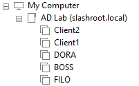
- Windows Server 2019 Domain Controller (DC) named BOSS.
- Windows Server 2019 Fileserver named FILO.
- Windows Server 2019 DHCP server named DORA.
- 1x Windows 10 client machine named Client1.
- 1x Windows 10 client machines Client2.
Creating the Domain Controller
The first VM we are going to be build is our DC (BOSS). Create a new VM in VMware:
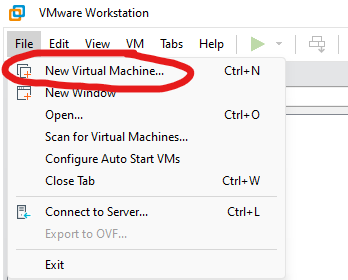
Select 'Typical' and on the following screen, browse and select our Windows Server 2019 ISO image we downloaded in the previous step.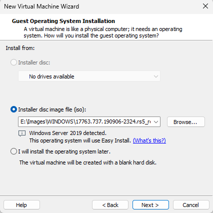
Select 'Windows Server Datacentre Core' and leave the other settings as default: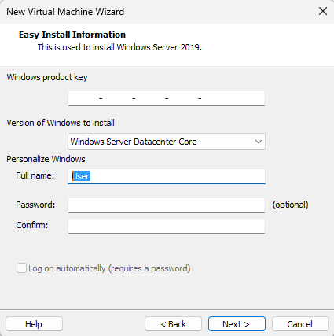
Enter a VM name and create it in a location of your choosing: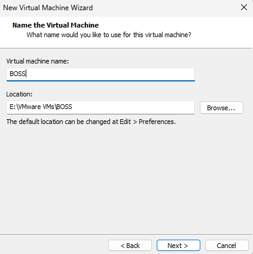
Choose a suitable disk size for the VM - I've selected 60GB which is the default but also overkill. You should not need more than 30GB.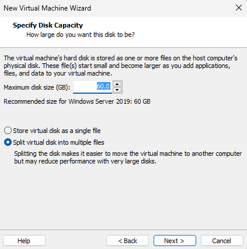
On the next screen select 'Customise Hardware':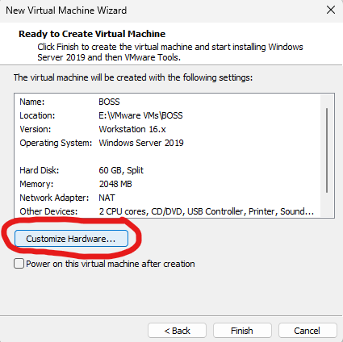
If you remember back to the topology, our DC was going to sit on the boundary of our network serving external connectivity to our domain. For this we need the DC to have two Network Interface Cards (NICs) - one INTERNAL and one EXTERNAL.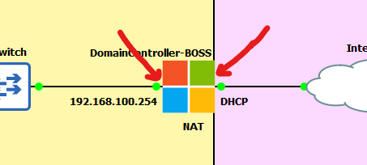
As our DC VM only has one NIC currently we need to add another. Click 'Add':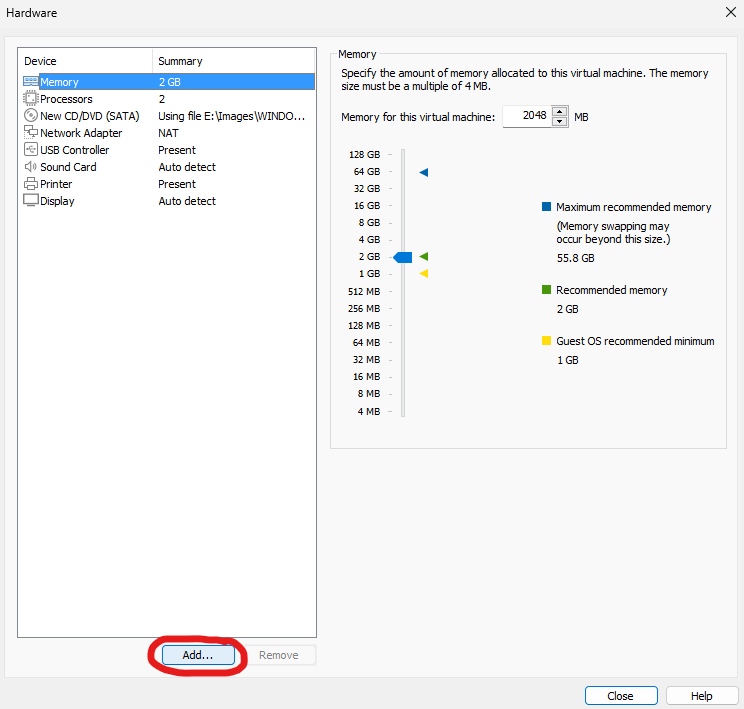
Select 'Network Adapter' and finish.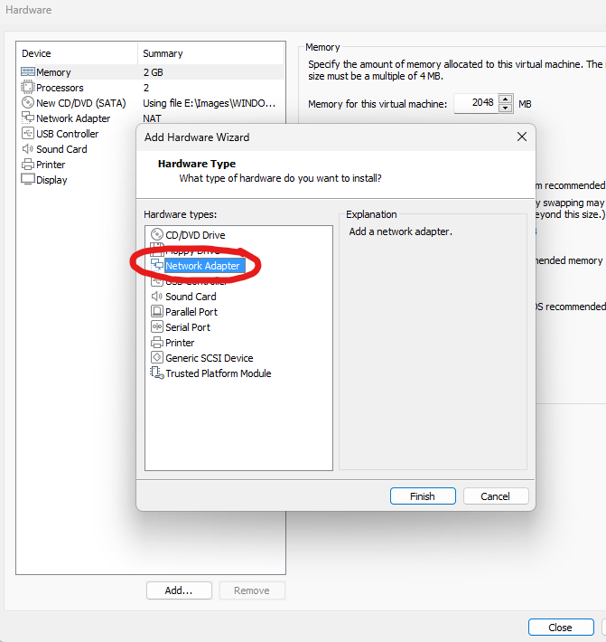
IMPORTANT! Ensure one NIC is set to NAT and the other NIC is set to 'VMnet2' (or whichever VMnet number you chose when setting up your networking in the previous guide).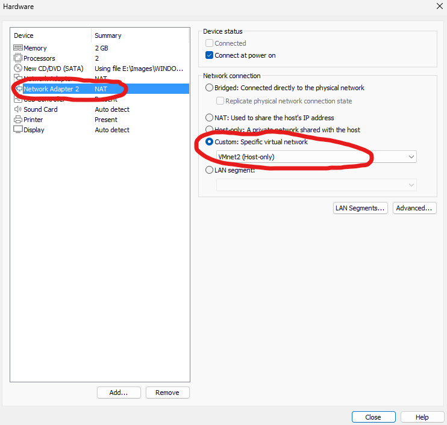
This is ultimately assigning either side of our DC VM to the INTERNAL or EXTERNAL network. Click to the next step and ensure you are happy with the hardware configuration. You may notice in the screenshot below my VM has 4096mb of memory - you do not have to do this, however, if you have the spare RAM to play with I recommend giving the DC VM a bit more juice.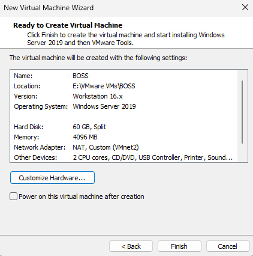
There is a final configuration step before this VM is ready for booting - we need to remove the floppy disk from the hardware configuration. Right-click your newly created 'BOSS' VM and select settings: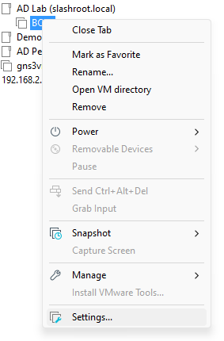
Select the floppy disk and 'Remove':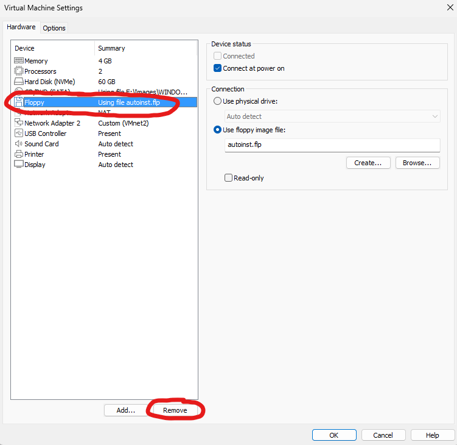
At this stage the DC is ready to install the OS.Creating the DHCP and file servers
Before we boot the DC VM lets create all our VMs first and do the installs in one go. To create the DHCP and file servers follow the above steps creating two more Windows Server 2019 VMs labelling them 'DORA' and 'FILO'. IMPORTANT: DO NOT add a second NIC to these VMs, a single NIC attached to 'VMnet2' is all they need. By default the NIC configuration in these VMs when you create them will more than likely be NAT, don't forget to change this to 'VMnet2' (or whatever VMnet number you configured in the previous guide). Remove the floppy disk from these VMs also. Once done, you should have three VMs: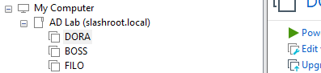
Creating client VMs
Finally, we need to create two Windows 10 client VMs. Using the above steps create two VMs but this time ensure to use the Windows 10 Evaluation ISO, not the Windows Server ISO: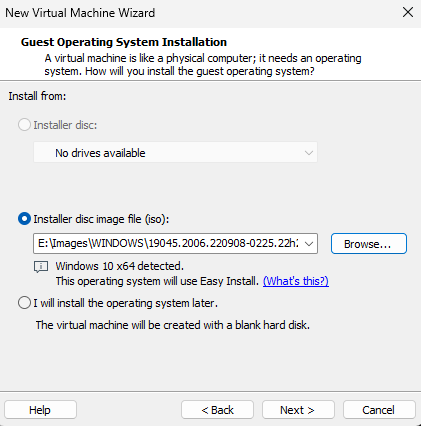
Select 'Windows 10 Enterprise' and accept the defaults: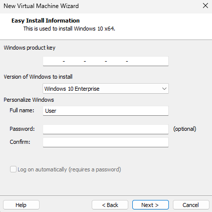
IMPORTANT: As before, do not forget to assign the network adapters to 'VMnet2' and remove the floppy disk drive from the hardware configuration. Once done, you should be left with the following 5 VMs: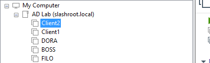
We are now ready to install our OS into these VMs.